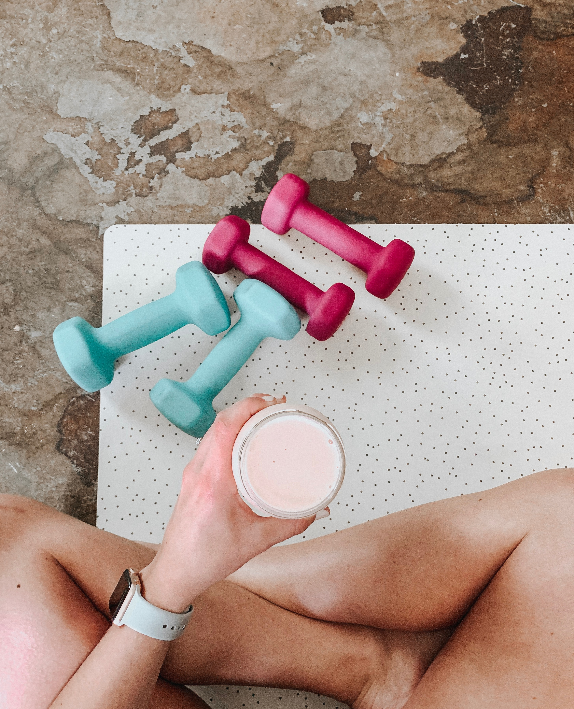

P-routine
P-routine이란?
서비스소개
제품보기
P-routine이 무엇인가요?
P
erfect
P
ersonal
P
rotein 필유가 지향하는 프로틴의 형태입니다.
You Need What You Need
고강도 운동을 하며 단백질 보충제를 먹지만 비타민, 미네랄이 부족한 대학생 최**씨
다이어트를 위해 식사대용으로 단백질 보충제를 섭취하지만 운동은 안하는 직장인 이**씨
꾸준하게 운동을 해왔지만 단백질 섭취가 부족한 갱년기의 주부 노**씨
당신을 위한 맞춤형 보충제

TEAM
필유